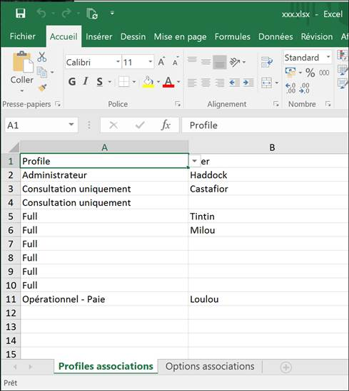

Accueil | DLMT - Gestion des licences nommées | Divalto Licences Management Tool (DLMT) | Export et import Excel
Le menu Excel propose l’export et l’import des profils et des
options dans un fichier Excel. L’export crée un fichier avec deux feuilles :
« Profiles associations » et « Options associations ».
Dans la colonne A de chaque feuille, on trouve la liste des profils ou
des options à associer. Il convient alors de saisir les comptes des utilisateurs
dans la colonne B puis d’importer le fichier Excel contenant les associations.
Attention, l’import annule et remplace toutes les associations qui auraient
été effectuées précédemment. L’export reprend les comptes déjà associés
à des profils ou à des options pour permettre de compléter les associations
déjà existantes sur un serveur.
